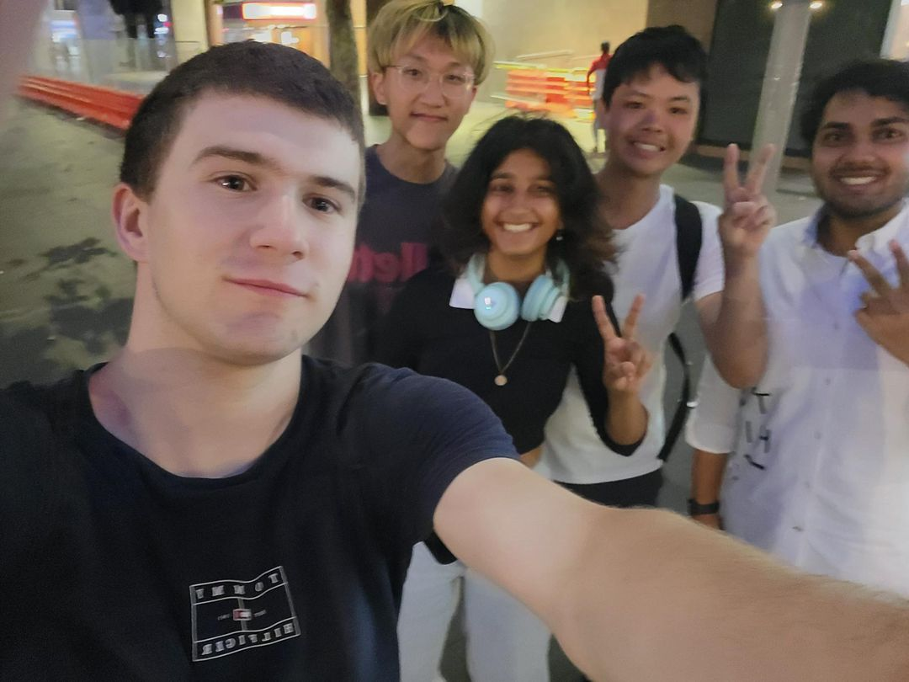
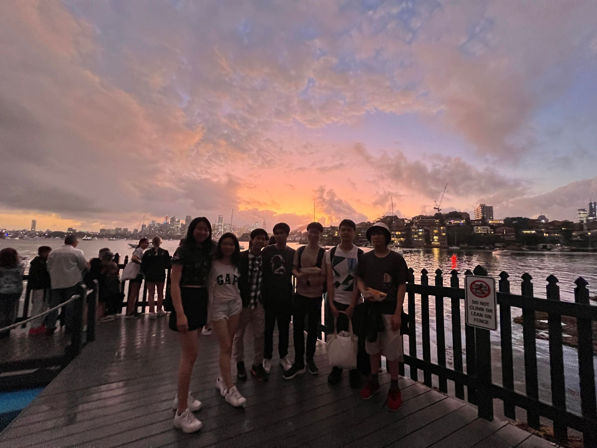
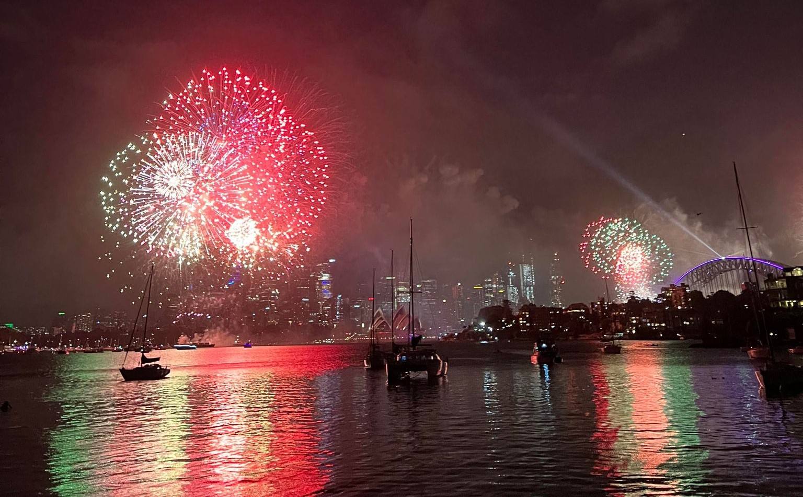

Hooray!!
I had nothing to do today so I thought what better way to step foot in UNSW for the first time this year than to meet new people. I was super shy 👉👈 because I went alone. I approached some international students because I overheard them conversing in cantonese and since I spoke it too, they would feel comfortable interacting with me. They were cool people. Turns out they were all here at UNSW for an exchange program. We were soon chatty and the environment became more cordial. They mentioned apparently that the event was supposed to be for exchange students. I was completely shocked. Dumbfounded by this, I became even more unnnerved.
When we got into groups, it was apparent that it was in fact NOT only catered for exchange students. I heaved a sigh of relief. I found everyone in our group to be interesting one way or another. One guy travelled 3 days from some part of South America (I forgot 💀) to get to UNSW and study their masters in some biology degree and for the first time, I met someone from the US. However, most people there were international/exchange students and only a few were local/domestic students.
After the event ended, I stayed to talk to the people that stayed. A few of them were in my group and I got to meet a couple more people. We all got together and formed a little group. It was pretty cool. We left the area together and we walked as a whole holding our tiny conversations between each other. We sat for a bit at the UNSW sports field appreciating the nostalgic view of rowdy children playing soccer on the field. Our conversations continued to flow smoothly like a zephyr. The sun was smiling, the sky was a canvas painted with a spread of calming blue and dabs of purified white. Being in that moment was a serendipitous experience.
Afterwards, we went to have lunch together and then played pool. We ended the day at a bar that had a bollywood themed night and complementary drinks. The person who suggested we come to the bar couldn't get inside because the bouncer didn't accept online passports 😭. Anyhow, the rest of us still had a great time. This entire experience was enriching and I hope to meet such great people in future events.
Here's a photo we took that day 😄
Arriving at the Circular Quay at 3 P.M., I was aghast at the unprecedented amount of people at the vicinity. I was with another two friends searching for the other people from our group that have already rendezvoused there. The air was stifling. Eager tourists continued to swarm the area claiming any area I call fireworks watching spot that they call territory. However, the atmosphere of laughter and conversations filled the area with a communal feeling of departure and vitality. We were all excited for the new year; excited to glimpse at the near future.
We left due to the sheer abundance of people to a more accessible firework watching spot. After some commute and walking, we arrived at Cremorne Reserve. We watched the 9 P.M. fireworks; mesmerised at the picturesque display of vibrant colours. However, internally, we were all brooding about our new years resolutions and awaiting for the "real" fireworks display.
We had a Macca's run closeby and we moved to Milson's Point to view from another spot. It was the brink of midnight. We all stood there in awe some in sorrow. Our new year's resolutions at the tip of our lips and our eyes fixated at the sky. The sky was a beacon for festivity and positivity. The explosions in the sky reflected the chaotic energy as we all let go of the year before us and filled the night with laughter and cheers.
These people around me are some of the best people in my life. I hope to continue to share these moments together as we grow older together every year.
Here are some photos from that day below. 🎆🎇🎉
 